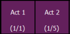

Scenes can be selected from the direct selects. From the direct selects display, press {Select} and then {Scenes} to view your scenes on the direct selects. The direct select will show the scene's label and cue.

Pressing a scene direct select will post the cue number associated with that scene as a terminated command onto the command line.
Double pressing a scene direct select will fire the cue, if {DirSelDbl Clk} has been enabled in Setup>Device>Displays.
To post as an unterminated command, hold down [Shift] as you press the direct select.
Scenes can be assigned to custom direct selects. To assign a scene to a direct select, you can either tap on a direct select to open the configuration window, or you can use the command line.
From the configuration window, you can select the target type of scene, and the scene number. Only one scene can be assigned at a time.
From the command line, you can select a scene, such as [Cue] [1] {Attributes} {Scene} [1] [Enter]. Then double click on a direct select to assign the selection.